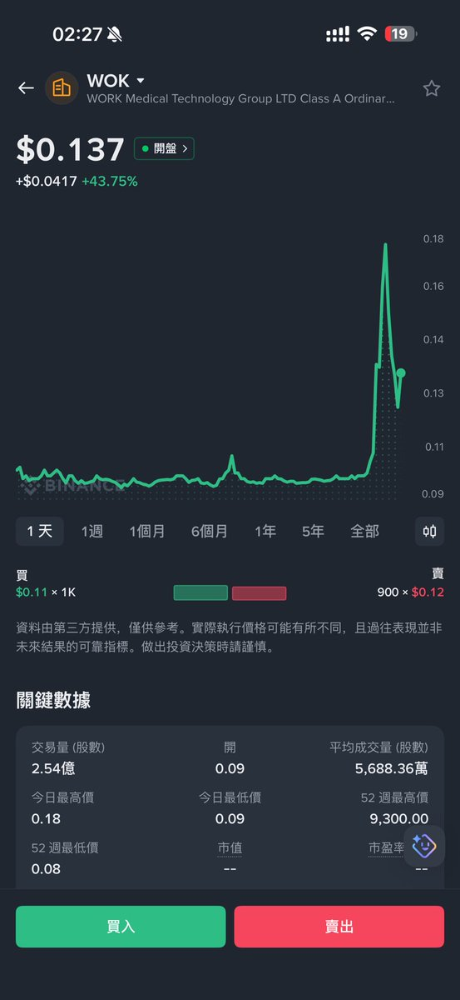
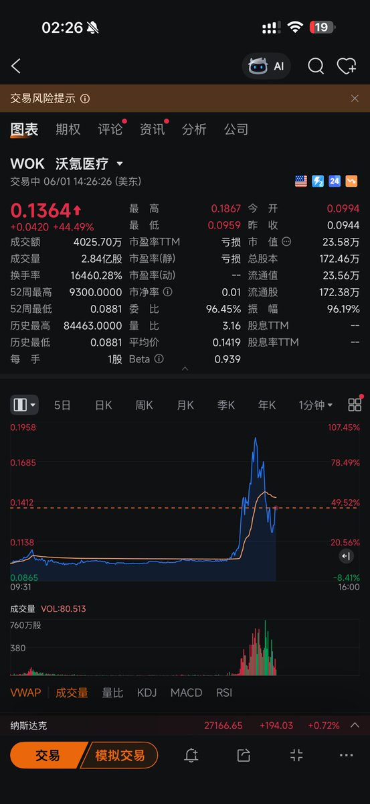
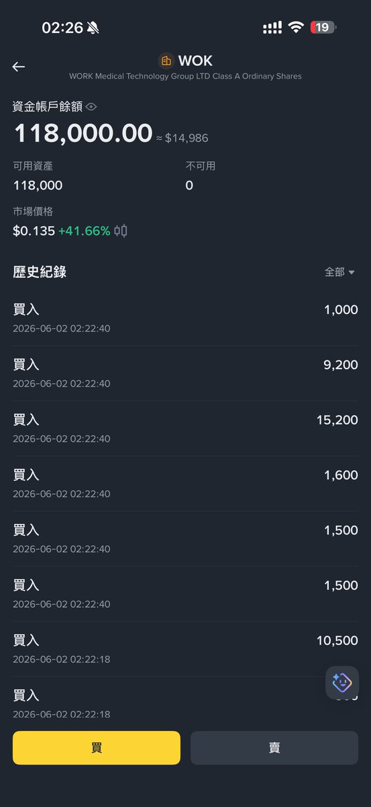

前面我刷到个美股的说币圈的kol写小作文写的很6是不是来美股能分分钟躺赚
诺，币圈顶流kol平均实际交易水平如下👇

诺，币圈顶流kol平均实际交易水平如下👇



跟@EnHeng456 在澳门吃饭，他跟我说，币安可以买这个市值最小的美股公司，我看才 30 万美金市值，他买了 5000u，然后我也跟着买 5000u，结果越买越跌，买了 1.5 万 美金了，怎么回事？？ 我和嗯哼都合计买了 10%股份了，当大股东了，怎么还在跌？？？股票可不是 meme https://t.co/QjSdF4XFx3